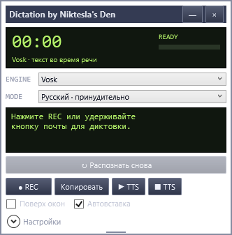

Одна клавиша для речи
Назначьте удобную клавишу или сочетание. Удерживайте её во время диктовки или нажимайте повторно для начала и завершения записи.
ГОЛОС → ТЕКСТ · ЛОКАЛЬНО
Диктуйте заметки, сообщения и длинные мысли. Dictation распознает речь на вашем компьютере и поможет перенести текст в нужное окно.
Скачать Dictation для WindowsВерсия 1.0 · ZIP, 4,83 МБ · Windows x64
Требуется .NET Framework 4.8 или новее.

Назначьте удобную клавишу или сочетание. Удерживайте её во время диктовки или нажимайте повторно для начала и завершения записи.
Vosk для русской речи и Whisper для разных языков. Режим LIVE показывает предварительный текст, пока вы говорите.
Запускайте диктовку клавишей для автовставки в активное окно. Результат также можно скопировать или распознать повторно.
ПЕРВЫЙ ЗАПУСК
Распакуйте ZIP целиком в папку, в которую можно записывать файлы, и откройте Dictation.exe. Выберите микрофон и движок распознавания.
При первом выборе движка программа загрузит его библиотеки и модель. Для Whisper модель занимает около 548 МиБ, дополнительно понадобятся библиотеки. Дождитесь завершения загрузки.
После загрузки распознавание работает локально. В настройках назначьте клавишу диктовки или начните запись кнопкой REC.